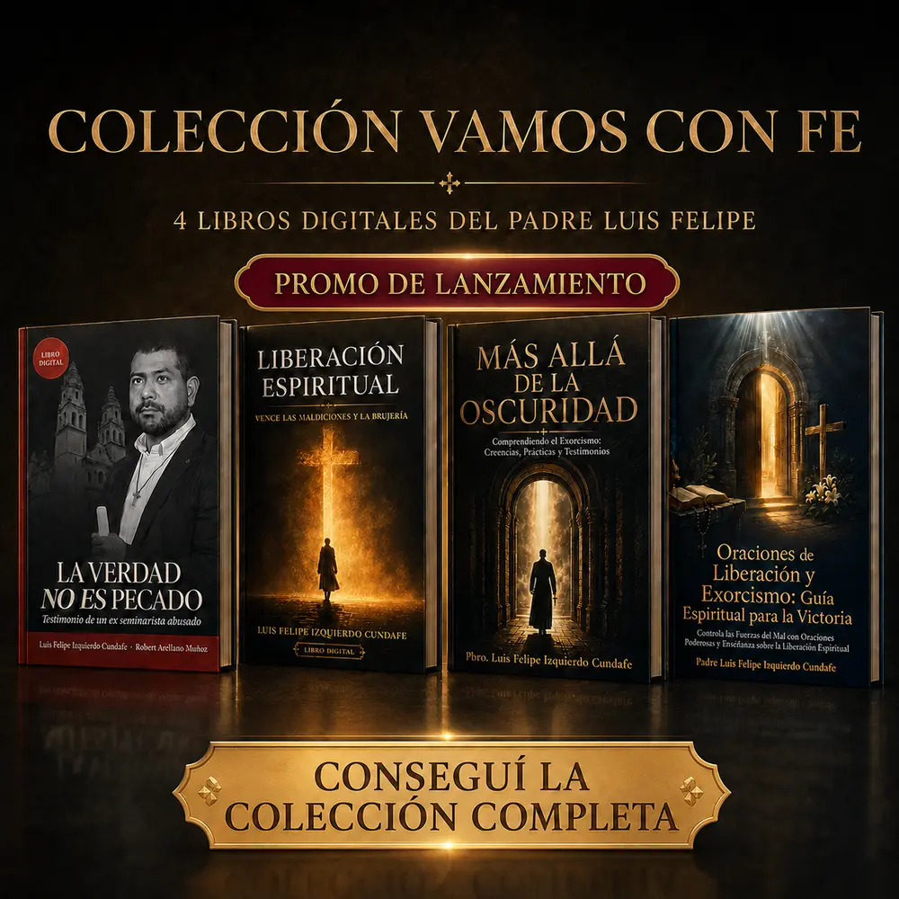

Testimonio
La Verdad no es Pecado
Una historia de abuso, silencio, fe, búsqueda de justicia y reconstrucción personal narrada con valentía.
Comprar este libroPromoción de lanzamiento
Colección Vamos con Fe
Verdad, oración, reflexión y liberación espiritual reunidas en una colección digital del Padre Luis Felipe.
Compra procesada de forma segura por Hotmart.

Una propuesta especial
Cuatro obras que se complementan: un testimonio de verdad y reconstrucción, dos caminos de conocimiento y liberación espiritual, y una guía práctica de oración.
Elegí cómo leerlos
Podés adquirirlos individualmente o llevar la colección completa con la promoción de lanzamiento.
Una historia de abuso, silencio, fe, búsqueda de justicia y reconstrucción personal narrada con valentía.
Comprar este libro
Reflexiones cristianas para comprender el miedo, fortalecer la oración y recuperar la confianza en Dios.
Comprar este libro
Historia, religión, psicología, ciencia, testimonios y ética para comprender el fenómeno del exorcismo.
Comprar este libro
Una guía espiritual con fundamentos bíblicos, oraciones, protección y orientaciones para caminar con fe y prudencia.
Comprar este libroLa mejor forma de empezar
En lugar de elegir un solo tema, recorré las cuatro miradas del Padre Luis Felipe y conservá todos los libros en tu biblioteca digital.
Antes de comprar
No. La colección se entrega en formato digital PDF para leer desde el celular, tablet o computadora.
Después de aprobarse el pago, Hotmart enviará el acceso al correo utilizado durante la compra. También estarán disponibles en la sección “Mis compras”.
Sí. Podrás descargarlos en tu dispositivo y conservarlos para leerlos sin conexión.
Sí. El pago y la entrega son gestionados por Hotmart, una plataforma especializada en productos digitales.
Promoción de lanzamiento
Sumá hoy la Colección Vamos con Fe a tu biblioteca digital.
Comprar la colección completa